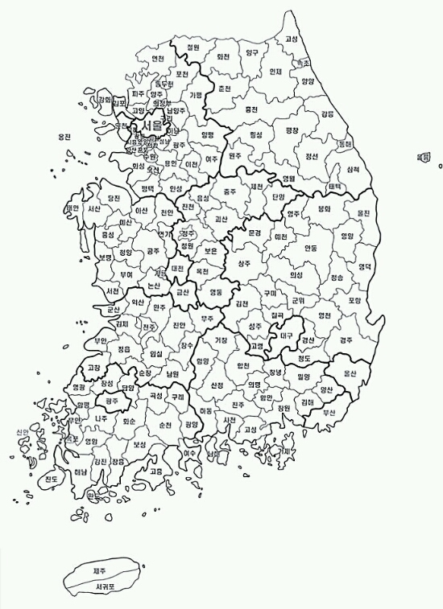

- 경기도
- 강원도
- 충청도
대한민국
대한민국(한국 한자: 大韓民國, 영어: Republic of Korea, KOR),
약칭 대한(한국 한자: 大韓), 남한(한국 한자: 南韓, 영어: South Korea),
한국(한국 한자: 韓國)은 동아시아의 한반도 남부에 자리한 민주공화국이다.
대한민국의 국기는 대한민국 국기법에 따라 태극기[3], 국가는 관습상 애국가[4],
국화는 관습상 무궁화이다. 공용어는 한국어와 한국 수어이다. 수도는 서울이다.
인구는 약 5,100만 100명으로, 전체 인구 중 절반 정도가 수도권에 살고 있다.[
5]
1945년 8월 15일, 한반도는 얄타회담에서 이루어진 비공식적 합의에 따라 소련과 미국
의 신탁 통치하에 들어갔다. 그 후에 한반도는 남과 북으로 분단되었다. 1948년 5월 1
0일 총선거를 통해 제헌국회를 구성하였고, 8월 15일에 대한민국 정부를 수립하였다.
1948년 제헌 국회에서 대한민국의 국호를 계승하여 헌법에 명시하였고 다시 1950년 1월
16일 국무원 고시 제7호 "국호 및 일부 지방명과 지도색 사용에 관한 건"에 의해 확정하
였다.
대한민국은 일명 ‘한강의 기적’으로 상징되는 빠른 속도의 대규모 경제 성장을 이루었다. 그 과정에서 1990년대 말 외환 위기 등의 부침이 있기도 했다. 대한민국의 2019년 1인당 국민 총소득(GNI)은 명목 3만 1,430달러로[6] 세계은행의 분류상 고소득 국가이고, 2016년 유엔의 인간 개발 지수(HDI) 조사에서 세계 18위로 ‘매우 높음’을 기록하였으며,[2] 국제 통화 기금(IMF)의 분류에서 선진 경제국이다. 다만 높은 자살률, 장시간 근로 문화와 높은 산업 재해 사망률, 저출산 등의 사회 문제가 이 같은 성과와 병존하고 있다. 대한민국은 이코노미스트에서 발표하는 민주주의 지수 조사에서 2019년 기준 23위의 8.0점을 기록한 바와 같이 아시아에서 민주주의
수준이 가장 높은 국가 가운데 하나이다. 또한 대한민국은 주요 20개국(G20), 경제
협력 개발 기구(OECD), 개발 원조 위원회(DAC), 파리 클럽 등의 회원국이다.[7]
